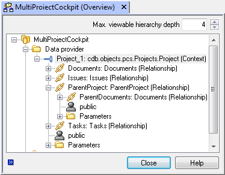
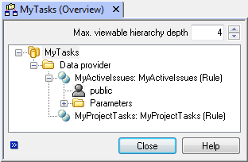
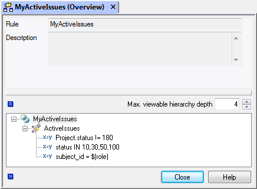
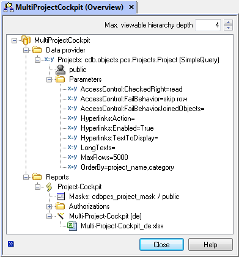
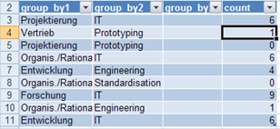
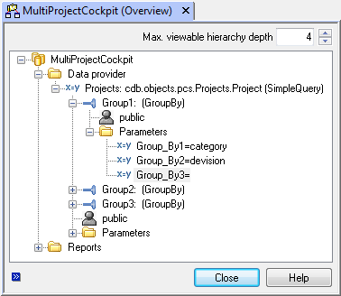
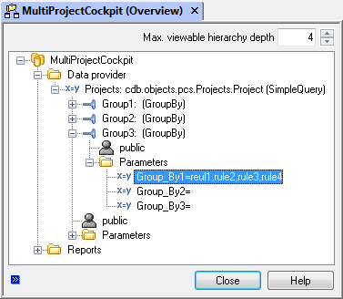
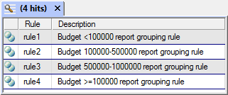
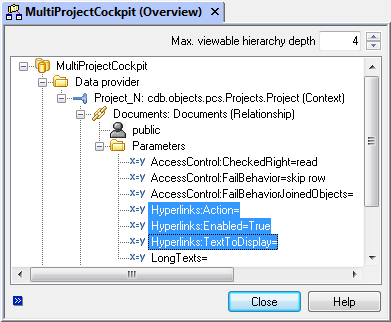
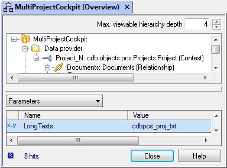

Data sources and data providers¶
PowerReports retrieve their data from XML sources that are configured in the system under .
XML sources can deliver context-free or context-related data and, based on these properties, are typically distinguished as two different types:
Context-related data sources
Context-related data sources deliver data for a project, EC or a part, for example. Evaluating context-related XML sources always requires at least one object that forms the context. This, for example, includes tasks and open issues for the project. In this example, the project forms the context. Reports based on context-related data sources are always recalled via the pop-up menu of the context-forming object. A report called ‘project overview’ that contains detail information related to a project is also recalled from the pop-up menu of a project.
Context-free data sources
Queries about the entire data stock are an example of context-free data. Evaluating context-free data sources does not require a context-forming object. Reports based on context-free data sources are recalled at a central location from the OfficeLink menu bar under .
Excel: PowerReports - Properties of data sources.
NameUnique name of an XML source.
ContextDetermines whether the data source is context-free or context-related. This field remains empty for context-free data sources. For context-related data sources, the object type within which the context of the data source is to be evaluated is specified in the form of a fully qualified Python name of the associated cdb.objects class. For example,
cdb.objects.pcs.Projects.Projectfor a data source that can be evaluated within the context of projects. When creating a new data source all root classes are available via the drop down list. When using Python subclasses the fully qualified Python name must be entered manually.CardinalitySpecifies the cardinality of the context. This field is not evaluated for context-free data sources. For context-related data sources, determines the cardinality and whether the data source can be evaluated based on exactly one context-forming object (single-select) or based on any number of context-forming objects (multi-select). Possible values are 1 or N.
DescriptionDescription of the data source.
Data providers¶
Assigned data providers deliver the data of an XML source. A data source can consist of any number of data providers. You can configure parameters for the data providers, which can be reused.
Data providers are classified into two different groups:
Universal data providers
Universal data providers are predefined data provider implementations for the most frequent use cases, usable in any data sources without programming, and configurable within their context. The following types of universal data providers are available:
Relationship
for navigating relationships of the cdb.objects framework
Rule
for configured, complex queries
SimpleQuery
for simple, interactive queries
GroupBy
for grouping the set of results of other providers
Specialized data providers
Specialized data providers are customer-specific provider implementations for special use cases. Specialized data providers can also be reused in any data sources. The implementation takes place by deriving a predefined base class and by implementing an interface. Specialized data providers are always of type
CustomCode.
Context-related data sources automatically contain a special data provider that delivers the context-forming object or objects. As follows, this data provider is referred to as a context provider. The following mapping shows the context provider based on the XML source ‘project overview.’ The project, from which an underlying report is recalled, is thereby automatically included in the exported XML data and can be presented in the report.
Excel: PowerReports - Context provider of a project-related report
Data providers can be arranged hierarchically. Within this context, subordinate data providers always work with the set of results of the higher-level data provider. The set of results for the higher-level providers also serves as an entry parameter for the subordinate provider. In this manner, the results of the higher-level provider can, for example, be grouped with a GroupBy provider or navigate relations through the object model.
The following illustration again shows the example ‘project overview’, expanded by adding a relationship provider that delivers the documents for the project. The context provider thus serves as a higher-level provider and, in this manner, provides the start object (the project) for navigating relations.
Excel: PowerReports - Relationship subprovider for the context provider
Properties of data providers¶
Excel: PowerReports - Properties of data providers
XML source
Foreign key of the associated XML source. Automatically prepopulated and not changeable.
Type
Type of data provider (see Types of providers in detail).
Provider
Depending on the provider type, this field specifies the data origin (see Types of providers in detail).
XSD name
A unique namespace within the context of the data source. Depending on the provider type, it can also be automatically prepopulated. After creating a provider, it cannot be changed.
Types of providers in detail¶
Relationship
Data providers of the type Relationship provide objects that are determined by navigating a relationship of the cdb.objects framework. As navigating a relationship always requires a start object, relationship providers can exclusively be used as subproviders. Relationship providers can be assigned to all providers that deliver cdb.objects objects as results.
The name of a relationship that can be navigated starting from the results object of the higher-level providers is entered in the field
Provider. When creating a relationship provider, the respectively available relations can be chosen from a catalog. When the data source of the parent provider is only Python subclass, then the available relations aren’t listet automatically, but must be entered manually.By linking relationship providers, data from the entire object model can be determined starting from the start object. The following example demonstrates the use of relationship providers starting from a project. For example, the parent project and all documents that belong to this project are determined.
Excel: PowerReports - relationships as provider
The use of a relationship provider on a higher-level provider that returns a n-digit result leads to a multi-export, i.e. the relationship is navigated individually for each result object of the higher-level provider and exported together with the start object. For data sources with multi-export configurations, a special template sheet in the Excel template is required (see Displaying complex rows for multi-export data sources).
The set of results of a relationship provider, depending on the cardinality of the relationship, is either an
ReportDataobject or aReportDataList.Rule
Data providers of the type Rule provide objects by evaluating a configured rule that describes the objects declaratively. Using configured rules, both simple and more complex queries can be run incorporating properties of referenced objects. For more detailed information about configurable rules, refer to the ‘Configurable rules’ section of the administrator manual.
Rule providers can be used without higher-level providers or as a subprovider. In both cases, the rule’s parameters can be configured by using variables. The variables can be queried by the user using an upstream dialog. The following is an example of a rule-based provider without a superordinate provider. For example, if a rule named My Projects: By Category is to provide projects with a project category defined in a report dialog and the term category=$(category) is defined for this purpose, then an attribute named myprojectsbycategory-category must be included in the report dialog. Since the variable name $(category) in this example corresponds to an actual object attribute name, this variable rule filter can also be linked to and updated in the report itself using an argument attribute that appears automatically in the XML schema. When used as a subprovider, an attempt is made to populate the variables from the attributes of the result object of the higher-level provider unless these are defined by a possible upstream dialog. An example of a term for a rule-based subprovider that is to provide tasks to the superordinate project provider would be cdb_project_id=$(cdb_project_id).
In the ‘Provider’ field for rule providers, enter the name of the rule to be used.
The sorting of the set of results can be determined using the parameter OrderBy. The sorting is defined using a comma-separated list of the database attributes according to which the search is to be run. For sorting in descending order, the respective attribute is prefixed with a minus sign.
The following illustration shows a data source with two rule providers for determining project tasks to be processed and uncompleted open issues for which the logged-in user is responsible:
Excel: PowerReports - provider for rule-based determination of tasks
The definition of rules for determining the open issues could look like this:
Excel: PowerReports - configured rules for determining a user’s open items
The set of results of rule providers is always a ReportDataList.
SimpleQuery
Data providers of the type SimpleQuery provide objects through queries to a database table, similar to a system search. SimpleQuery providers are used context-free, meaning that they are not used as subproviders, but always at the top level for the data source.
In the ‘Provider’ field, enter a cdb.objects class that defines the type of objects to be provided. The cdb.object class thus also defines the database table on which the search is run.
SimpleQuery providers return the entire data stock of the respective database table without constraints through search conditions. The search conditions to be used are queried by the user for SimpleQuery Providers by an upstream report dialog. For each report based on a data source, this dialog can make different search conditions available for selection or determine them in fixed fashion. Regardless of the search conditions used, the maximum number of results can be restricted using the MaxRows parameter. If this number is exceeded, an error message is displayed and the report is not generated.
The sorting of the set of results can be determined using the parameter OrderBy. The sorting is defined using a comma-separated list of the database attributes according to which the search is to be run. For sorting in descending order, the respective attribute is prefixed with a minus sign.
The following illustration shows a data source with a SimpleQuery provider for projects with a defined sorting and the set of results limited to 5000. The other parameters displayed also apply for all other provider types and are described in detail in Provider parameters.
Excel: PowerReports - SimpleQuery provider
SimpleQuery providers always return a ReportDataList as the result.
GroupBy
GroupBy providers group the results of other providers based on configurable attributes or value ranges. They are always used as subprovider for providers who return a ReportDataList as the result. In doing so, group functions (sum, average, min, max, count) can be defined for all numerical attributes. This makes the results tables from GroupBy providers particularly well suited for creating diagrams.
Excel: PowerReports - Results table of GroupBy providers
The following figure provides an example of the grouping of projects returned by a higher-level SimpleQuery provider. The criteria for grouping is defined by the parameters Group_By1, Group_By2 and Group_By3. In the simplest case, these parameters are assigned attribute names that are to be used as the basis for grouping. Group functions are defined using optional Function1, Function2, etc. parameters. These are each assigned a value pair consisting of a group function and attribute name separated by a colon, e.g. count:* or average:effort_plan (the count group function is available by default in this case, meaning it does not have to be explicitly defined as FunctionX of the provider). Adding several GroupBy providers lets you group the results from a higher-level data provider by different criteria simultaneously. Each GroupBy provider returns its own results table in the process.
Excel: PowerReports - Grouping projects
The user can also interactively prompted for the GroupBy_1, GroupBy_2 and Group_By_3 grouping criteria in a preceding report dialog. This allows users themselves to group by any properties. The grouping criteria from the dialog take priority over the criteria defined on the Parameters tab.
To group by value ranges, such as by budget for projects, a list of configured rules can be specified instead of an attribute name. In this case, the rules describe the subsets into which the result objects of the higher-level provider are sorted. As shown in the figure below, the rules are specified in parentheses as comma-separated lists.
Excel: PowerReports - Grouping by value ranges with rules
The grouping rules used in the example specify value ranges for the project budget. A definition of these rules could have the following appearance. You can find more information on configurable rules in the administrator manual in the ‘Configurable rules’ section.
Excel: PowerReports - Grouping rules using grouping projects by budget as an example
CustomCode
Data providers of the CustomCode type can determine and return data in any way. For example, CustomCode providers can carry out queries, add computed columns or even return data from external databases. CustomCode providers can construct report data from cdb.objects objects or RecordSets. Furthermore, every aspect of the report data can be freely designed. You can find the implementation of CustomCode providers and a detailed API description in Implementation of separate providers.
Context
Data providers of the Context type are only created automatically. The system creates them when creating a new context-related data source. A context-related data source always contains exactly one data provider of the Context type. This provider returns the object or objects used to call the report. Subproviders of the Relationship type, for example, can be attached to the context provider to integrate referenced objects into the report.
Depending on the cardinality of the data source, a context provider returns either a list of objects as ReportDataList or a single object as a ReportData object.
Provider parameters¶
Data providers can be configured using parameters. The available parameters depend on the respective provider type and are added automatically with the default values when creating new providers. The parameters described in this section apply to all providers that return data in the form of cdb.objects objects. This also applies to providers of the CustomCode type that you implement yourself.
Excel: PowerReports - Data provider default parameters
- Rights check at the object level
A rights check at the object level can be configured with the following parameters for all data providers that return cdb.objects objects as a set of results.
AccessControl:CheckedRight
Specifies the right to be checked for each object. The rights check at the object level is disabled if this parameter is not present or is left blank. All of the rights and access right groups in the rights system can be used. The read right is entered by default when creating a universal provider. For large amounts of data, as is possible for providers of the SimpleQuery type, runtime performance deteriorates if the rights check is enabled. If not absolutely necessary, the rights check at the object level should be disabled if there is potential for large amounts of data.
AccessControl:FailBehavior
Specifies the behavior in the event of a negative (i.e. failed) rights check. There are two modes available for selection:
obfuscate
The object attributes are obfuscated before exporting. The key attributes and other added data, such as computed columns, remain legible.
skip row
The object and, if applicable, any added data are not exported.
- Hyperlinks
Data providers can export configuration-related hyperlinks that can be used to link to corresponding objects in the system directly from Excel. Hyperlinks are configured using the parameters described below:
Hyperlinks:Enabled
Enables hyperlinks for the data provider. An additional cdbxml_hyperlink attribute is exported. This can be used in the Excel data connection, automatically linking to the corresponding system object from Excel. Assigning ‘true’ to this parameter is all that is required to enable hyperlinks. If nothing is assigned to the parameters described below, hyperlinks are generated using the CDB_ShowObject action (displaying the object in an info dialog) labeled with the object description configured in the class directory.
Hyperlinks:Action
Specifies the system operation to be run when clicking on the hyperlink. All of the operations defined for an object class can be used. This includes system operations such as CDB_Modify and CDB_View, PowerScript operations and GraphView operations such as cdbpcs_project_overview for displaying the project overview. The __default_action__ class variable of the underlying cdb.objects class is evaluated if this field is left blank. If this is also undefined, the CDB_ShowObject operation is used.
Hyperlinks:TextToDisplay
Specifies the text to be displayed. You can specify any character string for a constant expression or an attribute name of the underlying cdb.objects class. The configured object description from the system class directory is used if this field is left blank.
Excel: PowerReports - Hyperlink configuration and associated schema object
- LongTexts
Data providers can optionally export the longtexts that belong to an object. The longtexts to be exported are specified explicitly by the LongTexts parameter for performance reasons. The longtexts to be exported are specified by a comma-separated list of the longtext relations. The entered longtexts are then also available in Excel for establishing the data connection under this name.
Excel: PowerReports - Longtext configuration and associated schema object
- Attribute Types
By default data providers always additionally export mapped attributes. When other special attributes like the joined and virtual ones should be exported, then this behavior has to be explicitly activated for every provider. This is done by setting the provider parameter AllAttributeTypes to True.
Important
For performance reasons the usage of joined and virtual attributes is discouraged for providers that supply many objects.
- MaxRowsTruncate
The result set of a provider can be limited with this parameter. If a list exceeds the sheet row number 65535 when a list is filled, an XML import error message appears in Excel that no or only some data has been imported.
General access rights at the provider level¶
Access to the data of a data provider is protected by assigning authorized roles and persons. The ‘public’ role is entered automatically when creating a data provider, meaning there are initially no access limitations at the provider level.
Excel: PowerReports - General access rights at the provider level
In addition to access limitations at the provider level, providers also carry out a rights check at the object level using the rights system during a data export. The rights check at the object level can be enabled/disabled for each provider. The checked right can be configured.